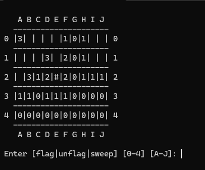

Super Mario Bros. Level 1 (UE5)
Solo Project
- Roles: Visual Scripting
- Tools: Unreal Engine 5
- Description: Recreated the first level of Super Mario Bros in Unreal Engine 5 using Blueprints. Implemented core gameplay, camera logic, enemy triggers, and player states.
3D to 2D Shopkeeper
Solo Project
- Roles: Visual Scripting
- Tools: Unreal Engine 5
- Description: Created a shopkeeper system where the player must purchase access to a 2D minigame using a 3D character in UE5. Used Blueprints and UI programming to transition smoothly between modes.
Minesweeper
Solo Project
- Roles: C#
- Tools: Visual Studio 2022
- Description: A classic Minesweeper clone built with C# in a Windows console.

Seven Skies: The Lost Azure Jewel
by The Shantymen
- Roles: Blueprints, 3D Environment Artist, Technical Artist
- Tools: Unreal Engine 5, Blender 4.0
- Description: This was a group project with a focus on 3D art. My main responsibilities included programming the AI behaviors, implementing sound effects, creating the landscape material, designing the credits UI, and integrating cinematics into the project.